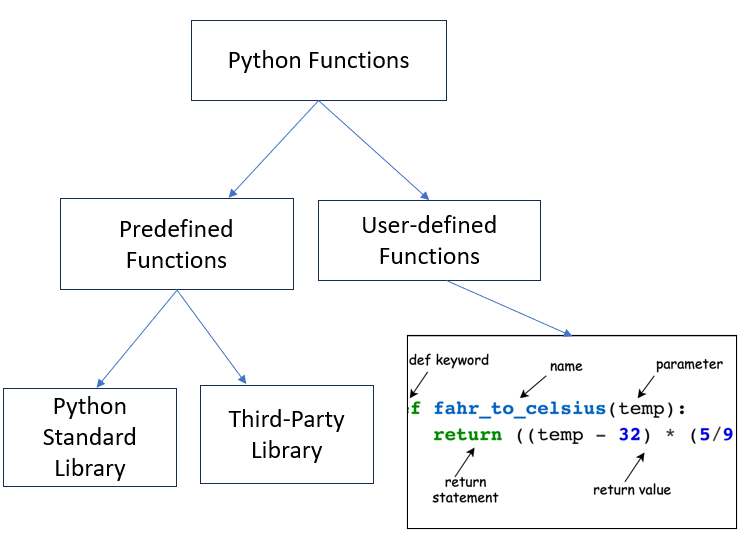

5 Functions
5.1 Function Definition
Functions are the fundamental building blocks of any Python program. They are organized blocks of reusable code designed to perform a specific task. A function can take one or more inputs (parameters), execute a block of code, and optionally return one or more values.
5.1.1 Why Use Functions?
Functions allow developers to write modular, reusable, and efficient code. Instead of duplicating the same logic multiple times, functions let you define the logic once and call it wherever needed.
5.2 Advantages of Functions
- Increases Modularity
- Functions allow the program to be divided into smaller, manageable parts, making it easier to understand, implement, and maintain.
- Reduces Redundancy
- By defining a function once, you avoid rewriting the same code multiple times. Simply call the function when needed.
- Maximizes Code Reusability
- Functions can be used as many times as necessary, enabling you to reuse your code efficiently and reducing overall development effort.
- Improves Code Readability
- Dividing a large program into smaller functions improves the clarity and readability of the code, making it easier to debug and maintain
5.3 Types of Functions
There are two types of functions in python:
- Predefined Functions - These are built-in functions in python.
- User-Defined Functions - these types of functions are defined by the user to perform any specific task
5.3.1 Functions
These are built-in functions that perform common tasks. Built-in functions come from two main sources:
- Python Standard Libaries
- Third-Party Libraries
5.3.1.1 Python Standard Library
The Python Standard Library is an umbrella term for all the modules (A module is a file containing Python code (functions, classes, variables) that can be reused in your programs) and packages that come with Python, including both built-in modules (e.g., __builtins__) and other modules that require importing. Think of the standard library as a toolbox, with some tools always on the table (built-in) and others stored in drawers (import-required). Built-in functions like print(), len(), and type() are available directly without needing to import anything. They are part of Python’s built-in namespace, which is loaded into memory when Python starts.
Many modules in the Python Standard Library, like math, os, or datetime, are not automatically loaded to keep the startup time and memory usage low. To access functions or classes from these modules, you need to explicitly import them using the import keyword.
Let’s see different ways to import modules next
- Basic Import
import math
# To use a function from the module, preface it with random followed by a dot, and then the function name
print(math.sqrt(16))4.0- Import Specific Functions or Classes
# import only sqrt function from math module
from math import sqrt, pi
print(sqrt(25))5.0- Import with Alias:
import numpy as np
print(np.array([1, 2, 3]))[1 2 3]- Wildcard Import (Not Recommended):
from math import *
print(sin(1))0.8414709848078965This way imports every function from the module. You should usually avoid doing this, as the module may contain some names that will interfere with your own variable names. For instance if your program uses a variable called total and you import a module that contains a function called total, there can be problems. In contrast, the first way imports an entire module in a way that will not interfere with your variable names. To use a function from the module, preface it with the module name followed by a dot
Location: Usually, import statements go at the beginning of the program, but there is no restriction. They can go anywhere as long as they come before the code that uses the module.
5.3.1.2 Useful Modules
Here’s a list of commonly used and useful modules from the Python Standard Library:
os: For interacting with the operating system, such as file paths and environment variables.sys: For interacting with the Python runtime environmentre: For regular expressions and pattern matchingmath: For mathematical functions and constantsrandom: For generating random numbers.datetime: For working with dates and timestime: For measuring time or introducing delays.
5.3.1.2.1 Random Numbers
Generating random numbers is very useful in python for performing simulations (we’ll see in later chapters). The library random is used to generate random numbers such as integers, real numbers based on different probability distributions, etc.
Below is an example of using the randint() function of the library for generating random numbers in [a, b], where a and b are integers.
import random as rm
rm.randint(5,10) #This will generate a random number in [5,10]7The random number will be different every time we run the program.
5.3.1.2.2 Math Functions
Python’s math module is part of the standard library and provides access to common mathematical functions and constants. You can use these functions for tasks such as computing square roots, trigonometric operations, logarithms, factorials, and more.
For example:
from math import sin, pi
print(pi)
print(pi/2)
print('sin(pi/2) =', sin(pi/2))3.141592653589793
1.5707963267948966
sin(pi/2) = 1.05.3.1.3 Getting Help from Python on a Module
There is documentation built into Python. To get help on the random module
dir(rm)['BPF',
'LOG4',
'NV_MAGICCONST',
'RECIP_BPF',
'Random',
'SG_MAGICCONST',
'SystemRandom',
'TWOPI',
'_ONE',
'_Sequence',
'__all__',
'__builtins__',
'__cached__',
'__doc__',
'__file__',
'__loader__',
'__name__',
'__package__',
'__spec__',
'_accumulate',
'_acos',
'_bisect',
'_ceil',
'_cos',
'_e',
'_exp',
'_fabs',
'_floor',
'_index',
'_inst',
'_isfinite',
'_lgamma',
'_log',
'_log2',
'_os',
'_pi',
'_random',
'_repeat',
'_sha512',
'_sin',
'_sqrt',
'_test',
'_test_generator',
'_urandom',
'_warn',
'betavariate',
'binomialvariate',
'choice',
'choices',
'expovariate',
'gammavariate',
'gauss',
'getrandbits',
'getstate',
'lognormvariate',
'normalvariate',
'paretovariate',
'randbytes',
'randint',
'random',
'randrange',
'sample',
'seed',
'setstate',
'shuffle',
'triangular',
'uniform',
'vonmisesvariate',
'weibullvariate']This provides a list of all the functions and variables in the random module. You can ignore entries that start with underscores, as they are typically used internally. To get help on a specific function, such as the uniform function, you can type:
help(rm.uniform)Help on method uniform in module random:
uniform(a, b) method of random.Random instance
Get a random number in the range [a, b) or [a, b] depending on rounding.
The mean (expected value) and variance of the random variable are:
E[X] = (a + b) / 2
Var[X] = (b - a) ** 2 / 12
For a comprehensive overview of the entire math module, type:
# help(rm) #This will give you all the functions available in the random moduleI encourage you to explore the documentation for a deeper understanding, especially when you need to use a module but are unsure how to get started.
5.3.2 Practice exercise 1
Can you use
math.sqrt(16)without importing the math module? Why or why not?Identify whether the following functions require importing a module:
abs()random.randint()time.sleep()
5.3.3 Practice exercise 2
Generate a random integer between [-5,5]. Do this 10,000 times. Find the mean of all the 10,000 random numbers generated.
5.3.3.1 Third-Party Python libraries
Other than the Python Standard Library, Python has hundreds of thousands of additional libraries that provide a wealth of useful functions. Since Python is an open-source platform, these libraries are contributed by developers from around the world. Some of the most popular libraries in data science and their purposes are listed below:
- NumPy: Performing numerical operations and efficiently storing numerical data.
- Pandas: Reading, cleaning and manipulating data.
- Matplotlib, Seaborn: Visualizing data.
- SciPy: Performing scientific computing such as solving differential equations, optimization, statistical tests, etc.
- Scikit-learn: Data pre-processing and machine learning, with a focus on prediction.
- Statsmodels: Developing statistical models with a focus on inference
Before you can use them, you need to install each library and then import it in your code.
A library can be imported using the import keyword after it has been successfully installed. For example, the NumPy library can be imported as:
import numpy as npUsing the as keyboard, the NumPy library has been given the name np. All the functions and attributes of the library can be called using the ‘np.’ prefix. For example, let us generate a sequence of whole numbers upto 10 using the NumPy function arange():
np.arange(8)array([0, 1, 2, 3, 4, 5, 6, 7])You will use these libraries in the upcoming data science courses.
5.4 User-defined Functions
A user-defined function is a function created by the user in Python to perform a specific task. Unlike built-in functions (like print() or len()), user-defined functions allow you to define custom functionality tailored to your program’s needs.
The image below provides a helpful breakdown of a Python function definition with labels for each component.

5.4.1 Key Components (Based on the Diagram)
defkeyword: Indicates the start of a function definition.- Function name: A descriptive name for the function, following Python naming conventions.
- Parameters: Variables passed into the function inside parentheses (
x,yin the example). These are optional. - Colon (
:): Signals the end of the function header and the start of the body. - Docstring: A multi-line string (optional) that describes the purpose and functionality of the function.
- Function body: Contains the logic and statements of the function.
returnstatement: Outputs a result back to the caller. This is optional.
Example
# define a function
def my_function():
print("Hello from a function")5.4.2 Functions are lazy
Functions are designed to be reusable. They don’t run until explicitly called, so their behavior can be invoked multiple times,
Call the my_function to execute it
# Simply use the function's name followed by parentheses
my_function()
# call the function again
my_function()Hello from a function
Hello from a functionThe function was called twice, it printed out the information twice.
5.4.3 Arguments and Parameters in a Function
The terms arguments and parameters are often used interchangeably but have distinct meanings in the context of functions in Python.
5.4.3.1 Parameters:
- Definition: Parameters are the variables listed in a function’s definition. They act as placeholders that specify the input a function can accept.
- When Used: Defined when you write the function.
- Example:
def greet_user(name): # 'name' is the parameter
print(f"Hello, {name}!")5.4.3.2 Arguments:
- Definition: Arguments are the actual values or data you pass to a function when you call it. These values are assigned to the function’s parameters.
- When Used: Provided when you invoke (call) the function.
- Example:
greet_user("Alice") # "Alice" is the argumentHello, Alice!Another Example:
# Function definition with parameters
def add_numbers(a, b):
return a + b
# Function call with arguments
result = add_numbers(5, 3)
print(result) 8Understanding the distinction between parameters and arguments is crucial for writing clear and effective functions in Python.
5.4.4 Type of Arguments in Python
5.4.4.1 Required Arguments
These are the arguments that must be provided when the function is called. If they are missing, Python will raise a TypeError.
def greet_user(name):
print(f"Hello, {name}!")
# Call with a required argument
greet_user("Alice") # Output: Hello, Alice!
# Call without an argument will raise an error
# greet_user() # TypeError: greet_user() missing 1 required positional argument: 'name'Hello, Alice!5.4.4.2 Keyword Arguments
These allow you to specify arguments by their parameter name. This makes your code more readable and avoids confusion, especially when dealing with multiple arguments.
def describe_person(name, age):
print(f"{name} is {age} years old.")
# Call with keyword arguments
describe_person(name="Bob", age=30) # Output: Bob is 30 years old.
describe_person(age=25, name="Alice") # Output: Alice is 25 years old.
# Call without keywords (positional)
describe_person("Charlie", 40) # Output: Charlie is 40 years old.
describe_person(35, "David") # Output: 35 is David years old.Bob is 30 years old.
Alice is 25 years old.
Charlie is 40 years old.
35 is David years old.5.4.4.3 Default Arguments
These are parameters that have default values. If no argument is provided during the function call, the default value is used.
def greet(name="Guest"):
print(f"Hello, {name}!")
# Call with an argument
greet("Alice") # Output: Hello, Alice!
# Call without an argument
greet() # Output: Hello, Guest!Hello, Alice!
Hello, Guest!Note: Default arguments must come after required arguments in the parameter list.
def greet(name="Guest", message):
print(f"Hello, {name}! {message}")Cell In[11], line 1 def greet(name="Guest", message): ^ SyntaxError: parameter without a default follows parameter with a default
5.4.4.4 Variable-Length Arguments
These allow a function to accept an arbitrary number of arguments.
Using *args for Non-Keyword Variable-Length Arguments
The *args syntax is used to pass a variable number of positional arguments. These arguments are accessible as a tuple.
def sum_numbers(*args):
total = sum(args)
print(f"The sum is {total}.")
# Call with multiple arguments
sum_numbers(1, 2, 3, 4)
sum_numbers(10, 20)
# Call without arguments
sum_numbers() The sum is 10.
The sum is 30.
The sum is 0.help(print)Help on built-in function print in module builtins:
print(*args, sep=' ', end='\n', file=None, flush=False)
Prints the values to a stream, or to sys.stdout by default.
sep
string inserted between values, default a space.
end
string appended after the last value, default a newline.
file
a file-like object (stream); defaults to the current sys.stdout.
flush
whether to forcibly flush the stream.
The print() function in Python allows you to pass multiple arguments, separated by commas. When you do so, print() automatically converts each argument to a string (if it’s not already a string) and joins them with a default separator, which is a space.
Example with multiple arguments:
print("Hello", "world!", 123, True)Hello world! 123 TrueYou can change the default separator using the sep parameter.
print("Hello", "world!", 123, True, sep="***")Hello***world!***123***TrueYou can change the default end parameter as well
print("Hello", "world!", sep="***", end=" :) ")
print("This is fun!")Hello***world! :) This is fun!Using **kwargs for Keyword Variable-Length Arguments
The **kwargs syntax is used to accept a variable number of keyword arguments. These arguments are accessible as a dictionary.
def print_details(**kwargs):
for key, value in kwargs.items():
print(f"{key}: {value}")
# Call with keyword arguments
print_details(name="Alice", age=30, city="Chicago")name: Alice
age: 30
city: ChicagoExample: Combining *args and **kwargs
def mixed_function(a, *args, **kwargs):
print(f"Fixed argument: {a}")
print(f"Args: {args}")
print(f"Kwargs: {kwargs}")
mixed_function(1, 2, 3, name="Alice", age=30)Fixed argument: 1
Args: (2, 3)
Kwargs: {'name': 'Alice', 'age': 30}5.4.4.5 Combining All Types of Arguments
You can use all these types of arguments in a single function, but they must follow a specific order:
- Required arguments
- Default arguments
*args**kwargs
def display_info(name, age=18, *hobbies, **details):
print(f"Name: {name}")
print(f"Age: {age}")
print(f"Hobbies: {', '.join(hobbies)}")
for key, value in details.items():
print(f"{key}: {value}")
# Call with all types of arguments
display_info(
"Alice",
25,
"reading", "traveling",
city="Chicago", job="Data Scientist"
)Name: Alice
Age: 25
Hobbies: reading, traveling
city: Chicago
job: Data Scientist5.4.5 Practice exercise 3
Write a function that prints prime numbers between two real numbers - a and b, where a and b are the parameters of the function. Call the function and check the output with a = 60, b = 80.
5.4.6 Functions that return objects
Until now, we saw functions that print text. However, the functions did not return any object. For example, the function odd_even prints whether the number is odd or even. However, we did not save this information. In future, we may need to use the information that whether the number was odd or even. Thus, typically, we return an object from the function definition, which consists of the information we may need in the future.
The example odd_even can be updated to return the text “odd” or “even” as shown below:
#This is an example of a function definition that has an argument with a default value, and returns an object
def odd_even(num=0):
if num%2==0:
return("Even")
else:
return("Odd")The function above returns a string “Odd” or “Even”, depending on whether the number is odd or even. This result can be stored in a variable, which can be used later.
response=odd_even(3)
response'Odd'The variable response now refers to the object where the string “Odd” or “Even” is stored. Thus, the result of the computation is stored, and the variable can be used later on in the program. Note that the control flow exits the function as soon as the first return statement is executed.
5.4.7 Practice exercise 4: Create a Custom Calculator
Write a function calculator that performs basic arithmetic operations: addition, subtraction, multiplication, and division.
Steps:
- Define a function
calculatorwith three parameters:a,b, andoperation(a string indicating the operation, e.g.,'add','subtract'). - Use conditional statements to handle the operations.
- Return the result of the operation.
- Handle invalid operations gracefully.
Expected Output Examples:
print(calculator(10, 5, 'add')) # Output: 15
print(calculator(10, 5, 'subtract')) # Output: 5
print(calculator(10, 5, 'multiply')) # Output: 50
print(calculator(10, 5, 'divide')) # Output: 2.05.4.8 Bonus question: Calculator Function with Variable Number of Inputs
Update the calculator function to handle a variable number of inputs using the *args
Hints
Variable-Length Arguments (
*args): The*argsparameter allows the function to accept an arbitrary number of arguments. These arguments are collected into a tuple, making them easy to iterate over.Handling the Operator: The operator parameter remains a keyword argument, defaulting to
"+". Supported operators are “+”, “-”, “*“, and”/“.Logic: Start with the first value in args (
result = args[0]). Iterate through the rest of the numbers inargs[1:]and apply the operator cumulatively.Validation: If fewer than two numbers are provided, return an error message. Handle division by zero with an additional check.
5.4.9 Practice exercise 5: Palindrome Checker
Write a function called is_palindrome that checks if a string is a palindrome (reads the same forward and backward).
Steps:
- Define the function
is_palindromewith one parameter,text. - Ignore case and spaces.
- Return
Trueif the string is a palindrome, otherwise False.
Expected OUtput Examples:
print(is_palindrome("radar")) # Output: True
print(is_palindrome("hello")) # Output: False
print(is_palindrome("A man a plan a canal Panama")) # Output: True5.4.10 Global and local variables with respect to a function
5.4.10.1 Local Variables
- Definition: A local variable is defined within a function (or a block of code) and can only be accessed within that function. Once the function finishes executing, local variables are discarded.
- Scope: Limited to the function in which they are declared
def example_function():
x = 10 # x is a local variable
print("Inside function, x =", x)
example_function()
# Trying to print x outside the function will result in an error:
print(x) # This will result in an errorInside function, x = 10--------------------------------------------------------------------------- NameError Traceback (most recent call last) Cell In[19], line 7 5 example_function() 6 # Trying to print x outside the function will result in an error: ----> 7 print(x) # NameError: name 'x' is not defined NameError: name 'x' is not defined
5.4.10.2 Global Variables
- Definition: A global variable is declared in the main body of the Python file (i.e., at the top level), making it accessible to any function or class in the same module, provided you do not shadow it with a local variable.
- Scope: Accessible throughout the entire module (file) after declaration.
- Best Practice: Use global variables sparingly, as they can make code harder to debug and maintain.
global_var = 20 # global variable
def show_global_var():
print("Inside function, global_var =", global_var)
show_global_var()
print("Outside function, global_var =", global_var)Inside function, global_var = 20
Outside function, global_var = 205.4.10.3 Using a Global Variable Inside a Function
By default, if you just read a global variable inside a function, Python will find it in the global scope. However, if you attempt to modify a global variable inside a function without explicitly declaring it global, Python will treat that variable as local, potentially leading to errors.
# Reading a global variable inside a function
global_var = 20 # global variable
def show_global_var():
print("Inside function, global_var =", global_var)
show_global_var()Inside function, global_var = 20# Changing a global variable inside a function
counter = 0
def increment_counter_wrong():
counter = counter + 1 # This will cause UnboundLocalError
print("Counter is now", counter)
increment_counter_wrong() # UnboundLocalError: local variable 'counter' referenced before assignment--------------------------------------------------------------------------- UnboundLocalError Traceback (most recent call last) Cell In[22], line 8 5 counter = counter + 1 # This will cause UnboundLocalError 6 print("Counter is now", counter) ----> 8 increment_counter_wrong() # UnboundLocalError: local variable 'counter' referenced before assignment Cell In[22], line 5, in increment_counter_wrong() 4 def increment_counter_wrong(): ----> 5 counter = counter + 1 # This will cause UnboundLocalError 6 print("Counter is now", counter) UnboundLocalError: cannot access local variable 'counter' where it is not associated with a value
Why the Error?
Python sees counter = counter + 1 as creating a new local variable counter on the left, while also trying to read an uninitialized local variable counter on the right.
5.4.10.4 The global keyword
To modify a global variable inside a function, you must use the global keyword:
counter = 0 # global variable
def increment_counter():
global counter # Tell Python we want to use the global 'counter'
counter += 1
print("Counter is now", counter)
increment_counter() # Counter is now 1
increment_counter() # Counter is now 2
print(counter) Counter is now 1
Counter is now 2
2When to Use global?
* Rarely. Global variables can create tightly coupled code that is prone to bugs. If needed, consider passing variables as arguments or using class-level variables for shared state.
5.4.10.5 Nested Functions and the nonlocal Keyword
In Python, you may have nested functions—a function defined inside another function. If the inner function needs to modify a variable in the outer (but still non-global) scope, you can use the nonlocal keyword.
For example:
def outer_function():
x = 10
def inner_function():
nonlocal x
x += 5
print("Inner function, x =", x)
inner_function()
print("Outer function, x =", x)
outer_function()Inner function, x = 15
Outer function, x = 15nonlocal x lets the inner function modify x in the outer_function’s scope, rather than creating a new local variable.
5.4.11 Practice exercise 6
Read the following code and answer the following questions:
- Will the program raise an error?
- If yes, fix the error and provide the corrected code.
- What will be the output of the corrected program?
message = "Global Message" # Global variable
def outer():
msg_outer = "Outer Message" # Enclosed scope
def inner():
message
msg_outer
message = "Changed Global Message"
msg_outer = "Changed Outer Message"
local_msg = "Local to inner()"
print("Inside inner()")
print("Global message =", message)
print("Enclosed msg_outer =", msg_outer)
print("Local local_msg =", local_msg)
inner()
print("\nInside outer() after inner() call:")
print("Global message =", message)
print("Enclosed msg_outer =", msg_outer)
print("Local local_msg =", local_msg)
outer()
print("\nOutside all functions (global scope):")
print("Global message =", message)
print("Enclosed msg_outer =", msg_outer)
print("Local local_msg =", local_msg)